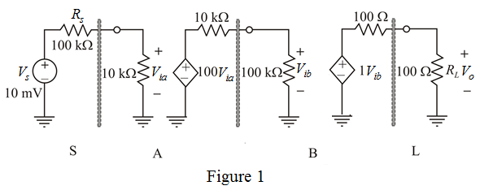
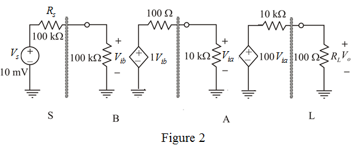

Apply voltage division rule and determine the voltage, .
Apply voltage division rule and determine the voltage, .
Determine the output voltage,  .
.
Therefore, voltage gain of SABL sequence is .
There are two possible connections for the amplifiers.
(a) SABL
(b) SBAL
(a)
Consider SABL sequence and draw the circuit diagram.

Apply voltage division rule and determine the voltage, .
Apply voltage division rule and determine the voltage, .
Determine the output voltage, .
Therefore, voltage gain of SABL sequence is .
Convert the voltage gain into decibels.
Therefore, voltage gain of SABL sequence in decibels is .
(b)
Consider SBAL sequence and draw the circuit diagram.

Apply voltage division and determine the value of .
Determine the output voltage, .
Therefore, voltage gain of SBAL sequence is.
Convert the voltage gain into decibels.
Therefore, voltage gain of SBAL sequence in decibels is .
The voltage gain of SABL amplifier arrangement is more than the voltage gain of SBAL amplifier arrangement. Therefore, the SABL amplifier arrangement is best.